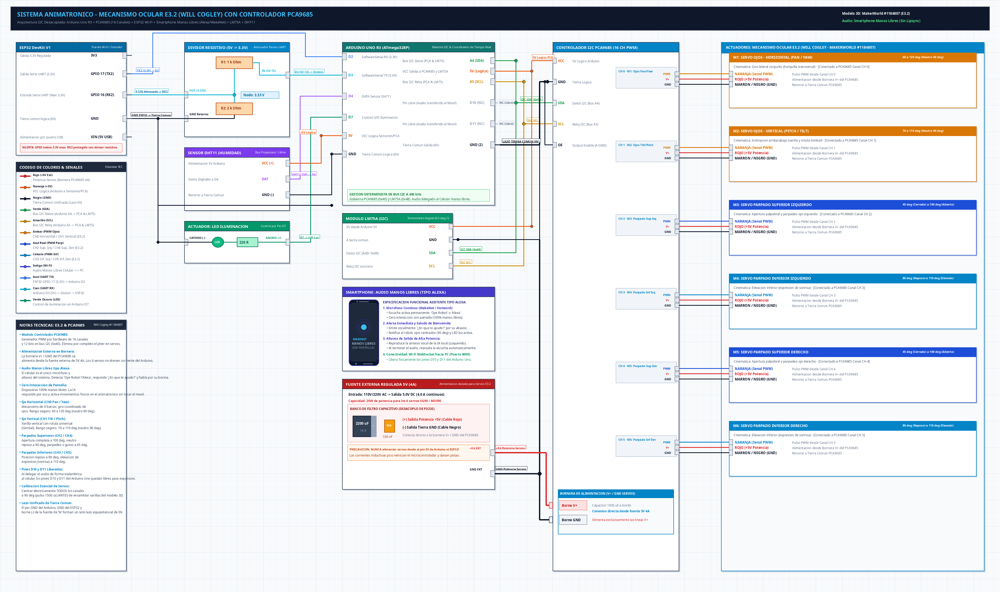

Arquitectura: Arduino Uno R3 (Maestro I2C) + ESP32 DevKit V1 (Wi-Fi) + PCA9685 (6 Servos ε3.2) + Smartphone Manos Libres + Fuente Externa 5V 4A
Los 6 servos ε3.2 se alimentan por la bornera V+ y GND del PCA9685 con desacoplo de 2200 µF + 100 nF. Nunca alimentar servos desde el Arduino.
Arduino A4 (SDA) y A5 (SCL) gobiernan simultáneamente el sensor LM75A (0x48) y el driver PCA9685 (0x40) sin conflictos de dirección.
Arduino GND, ESP32 GND, PCA9685 GND, módulo de audio y polo negativo (-) de la fuente de 5V deben estar unidos en un riel común de referencia.
El celular es el único micrófono y altavoz tipo Alexa. Detecta la palabra clave ("Oye Robot"), responde "¿En qué te ayudo?" y reproduce la IA. Pines D10 y D11 quedan 100% libres en el Arduino Uno.

Nota: Haz clic derecho en la imagen y selecciona "Abrir imagen en una nueva pestaña" para inspeccionar las rutas de cables y etiquetas con zoom al 100%.
Distribución de señales y potencia organizada para máxima legibilidad e inmunidad contra ruidos.
| Actuador / Función | Canal / Pin | Alimentación Potencia (V+) | Retorno (GND) | Rango Angular Seguro | Detalle Mecánico ε3.2 |
|---|---|---|---|---|---|
| Servo M1: Ojos Horizontal (Pan / Yaw) | PCA9685 Canal CH0 | Bornera V+ (5V 4A) | Bornera GND PCA9685 | 60° a 120° (Neutro 90°) | Enlace en paralelogramo de 4 barras: giro lateral coordinado de ambos ojos. |
| Servo M2: Ojos Vertical (Tilt / Pitch) | PCA9685 Canal CH1 | Bornera V+ (5V 4A) | Bornera GND PCA9685 | 70° a 110° (Neutro 90°) | Varilla vertical unida a rótula Gimbal para mirada arriba / abajo. |
| Servo M3: Párpado Superior Izquierdo | PCA9685 Canal CH2 | Bornera V+ (5V 4A) | Bornera GND PCA9685 | 45° (Cerrado) a 100° (Abierto) | Apertura y parpadeo ojo izquierdo. Neutro en 90°. |
| Servo M4: Párpado Inferior Izquierdo | PCA9685 Canal CH3 | Bornera V+ (5V 4A) | Bornera GND PCA9685 | 80° (Reposo) a 110° (Elevado) | Elevación sutil para gestos de sonrisa, curiosidad o concentración. |
| Servo M5: Párpado Superior Derecho | PCA9685 Canal CH4 | Bornera V+ (5V 4A) | Bornera GND PCA9685 | 45° (Cerrado) a 100° (Abierto) | Apertura y parpadeo ojo derecho. Permite guiños asimétricos individuales. |
| Servo M6: Párpado Inferior Derecho | PCA9685 Canal CH5 | Bornera V+ (5V 4A) | Bornera GND PCA9685 | 80° (Reposo) a 110° (Elevado) | Elevación de párpado inferior derecho para simetría gestual. |
| LED / Luz Ambiente | Arduino Pin D7 | Resistencia 220 Ω | Arduino GND | 0 (OFF) / 1 (ON) | Iluminación controlable por comando de voz o interruptor en la interfaz. |
| Elemento / Canal | Función en el Sistema | Protocolo / Enlace | Modo de Operación | Detalle de Operación |
|---|---|---|---|---|
| Micrófono Celular | Captura Continua Wake-Word | Wi-Fi / WebSpeech | Manos Libres (Headless) | Escucha continua de palabra clave ("Oye Robot", "Alexa"). Sin interacción táctil en pantalla. |
| Respuesta de Activación | Prompt "¿En qué te ayudo?" | Audio / WebSocket | Inmediato al despertar | Emisión acústica instantánea y aviso al robot para centrar mirada y activar LED de atención. |
| Altavoz Celular | Salida de Voz de la IA | Loquendo / Voicebox | Streaming HTTP / Audio | Reproduce la síntesis vocal y analiza la amplitud para animar párpados del robot. |
| Arduino D10 | Pin Libre / No Conectado (NC) | NC | Desconectado | Liberado. Audio transferido al smartphone inalámbrico. |
| Arduino D11 | Pin Libre / No Conectado (NC) | NC | Desconectado | Liberado. Audio transferido al smartphone inalámbrico. |
| Sensor | Pin del Sensor | Destino (Arduino Uno) | Color de Cable | Detalle de Operación |
|---|---|---|---|---|
| Módulo LM75A Termómetro digital I2C (0.5°C resolución) |
VCC | Pin 5V de Arduino | Naranja | Alimentación lógica de bajo consumo (~1 mA). |
| GND | Pin GND de Arduino | Negro | Retorno a tierra común. | |
| SDA | Pin A4 de Arduino | Verde | Línea de datos I2C (Bus compartido con PCA9685). | |
| SCL | Pin A5 de Arduino | Amarillo | Línea de pulsos de reloj I2C. | |
| A0, A1, A2 | A GND (Tierra) | Negro | Fija la dirección I2C en 0x48. |
|
| Sensor DHT11 Humedad relativa (20-80% RH) |
VCC (+) | Pin 5V de Arduino | Naranja | Alimentación lógica de 5V. |
| DAT / OUT | Pin D4 de Arduino | Morado | Bus digital 1-Wire propietario (muestreo cada 3 seg). | |
| GND (-) | Pin GND de Arduino | Negro | Retorno a tierra común. |
| Origen (Pin) | Elemento Intermedio | Destino (Pin) | Color Cable | Nivel Lógico / Justificación Técnica |
|---|---|---|---|---|
| ESP32 GPIO 17 (TX2) | Conexión directa jumper M-M | Arduino Pin D2 (RX) | Azul Real | 3.3V: ATmega328P reconoce >3.0V como nivel HIGH válido y estable. |
| Arduino Pin D3 (TX) | Resistencia R1 = 1 kΩ | Nodo Central Divisor | Cian | 5.0V: Nivel digital de Arduino que debe ser atenuado. |
| Nodo Central Divisor | Resistencia R2 = 2 kΩ a GND | ESP32 GPIO 16 (RX2) | Cian | 3.33V: Protege la compuerta de entrada del ESP32 contra daño por sobretensión. |
| ESP32 GND | Puente directo en riel (-) | Arduino GND | Negro | 0.0V (Tierra Común): Referencia idéntica obligatoria para evitar errores UART. |
• Eje Horizontal (M1 / CH0): Controla el giro lateral (Yaw) de ambos globos oculares mediante un enlace en paralelogramo de 4 barras. Los dos ojos se mueven sincrónicamente a izquierda y derecha.
• Eje Vertical (M2 / CH1): Una varilla vertical unida a una rótula universal (Gimbal) eleva o baja ambos ojos simultáneamente (Pitch).
• Calibración Inicial: Antes de colocar los cuernos (horns) o varillas, alimentar el PCA9685 y enviar pulso neutro de 90° (valor PWM ~300).
• Párpados Superiores (M3 / CH2 y M5 / CH4): Permiten el parpadeo natural coordinado o guiños independientes (ojo izquierdo o derecho).
• Párpados Inferiores (M4 / CH3 y M6 / CH5): Se elevan sutilmente para reproducir expresiones de sonrisa (sonrisa Duchenne) o sospecha/concentración.
• Seguimiento Palpebral: En el firmware, al mirar hacia abajo en el eje vertical (CH1), los párpados superiores deben descender ligeramente para un realismo anatómico fiel.